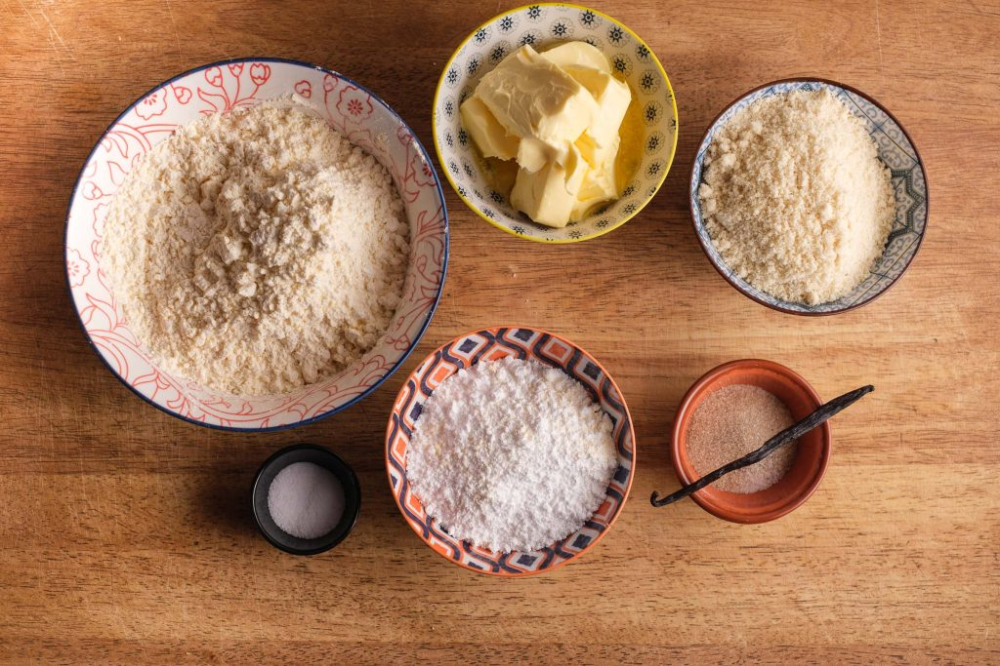
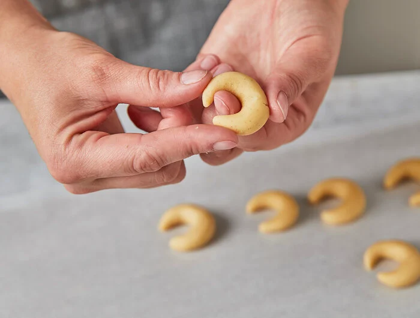
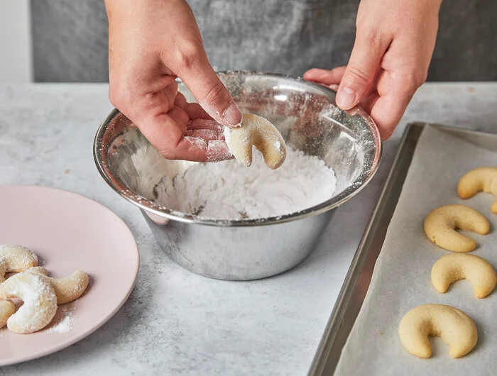

300 g Weizenmehl(Typ405)
100 g gemahlene Mandel (blanchiert)
120 g Puderzucker
1 Vanilleshote
1 Prise Salz
225 g Butter
3x Eigelb (Gr.M)
120 g Puderzucker zum Wälzen
1 Pck.Vanillazucker
Mehl mit Mandeln und Puderzucker in einer Schüssel mischen.
Vanilleschote längs aufschneiden und das Mark herauskratzen.
Zusammen mit Salz, Butter in Würfeln und Eigelben zugeben.
Alles mit den Händen rasch zu einem glatten Teig kneten.
In Folie gewickelt 1 Stunde kaltstellen.

Backofen auf 180 Grad Ober-/Unterhitze (Umluft: 160 Grad) vorheizen.
Backbleche mit Backpapier belegen.
Teig in 4 Teile teilen.
Portionsweise den Teig aus dem Kühlschrank nehmen und aus jeweils walnussgroßen Stücken
Hörnchen formen und mit Abstand auf das Blech legen.

Die Vanillekipferl im vorgeheizten Ofen ca. 8 Minuten backen.
Währenddessen Puderzucker und Vanillezucker in einer Schale vermischen.
Die Vanillekipferl nach dem Backen direkt vorsichtig in der
Puderzucker-Zucker-Mischung wälzen und auf einem Gitter komplett erkalten lassen.
